1 Overview
The prior tutorials have focused on constructing economic models to simulate disease progression, costs, and quality-adjusted life-years (QALYs). While incremental cost-effectiveness ratios (ICERs) have been computed and probabilistic sensitivity analysis (PSA) has been employed, we have not yet formalized cost-effectiveness analysis (CEA) or represented decision uncertainty.
In this analysis we will perform a CEA given the output of model from the “Semi-Markov Multi-state Model” tutorial. We will use the CEA functions from hesim to summarize decision uncertainty and ggplot2 for visualization. The CEA will be peformed for a single target population, but you can review the hesim tutorial on CEA and the references therein for an example of CEA in the context of multiple subgroups.
library("hesim") library("ggplot2") theme_set(theme_minimal()) # Set ggplot2 theme
2 Theory
CEA is based on estimating the net monetary benefit (NMB). For a given parameter set \(\theta\), the NMB with treatment \(j\) is computed as the difference between the monetized health gains from an intervention less costs, or,
\[ \begin{aligned} NMB(j,\theta) = e_{j}(\theta)\cdot k- c_{j}(\theta), \end{aligned} \]
where \(e_{j}\) and \(c_{j}\) are measures of health outcomes (e.g. QALYs) and costs using treatment \(j\) respectively, and \(k\) is a decision makers willingness to pay (WTP) per unit of health outcomes. The optimal treatment is the one that maximizes the expected NMB,
\[ \begin{aligned} j^{*} = \text{argmax}_j E_{\theta} \left[NMB(j,\theta)\right]. \end{aligned} \]
For a pairwise comparison, treatment \(1\) is preferred to treatment \(0\) if the expected incremental net monetary benefit (INMB) is positive; that is, if \(E_\theta \left[INMB\right] > 0\) where the INMB is given by
\[ \begin{aligned} INMB(\theta) = NMB(j = 1, \theta) - NMB(j = 0, \theta). \end{aligned} \]
Treatments can be compared in an equivalent manner using the incremental cost-effectiveness ratio (ICER). The most common case occurs when a new treatment is more effective and more costly so that treatment \(1\) is preferred to treatment \(0\) if the ICER is greater than the willingness to pay threshold \(k\),
\[ \begin{aligned} k > \frac{E_\theta[c_{1} - c_{0}]}{E_\theta[e_{1} - e_{0}]} = ICER. \end{aligned} \] There are three additional cases. Treatment \(1\) is considered to dominate treatment 0 if it is more effective and less costly. Treatment \(1\) is dominated by treatment \(0\) if it is less effective and more costly. Finally, treatment \(1\) is preferred to treatment \(0\) if it is less effective and less costly when \(k < ICER\).
In practice, the distribution of \(\theta\) is simulated from the output of the PSA. Specifically, For each treatment strategy, a PSA produces \(m\) random draws from the distribution of health outcomes and costs,
\[ \begin{aligned} e_{j} &= [e_{j}^1, e_{j}^2, \dots, e_{j}^m] \\ c_{j} &= [c_{j}^1, c_{j}^2, \dots, c_{j}^m]. \end{aligned} \]
3 Application
CEA can be performed using the hesim::cea() and hesim::cea_pw() functions. cea() summarizes results by taking into account each treatment strategy in the analysis, while cea_pw() summarizes “pairwise” results in which each treatment is compared to a comparator.
We will use these functions to analyze the distribution of costs and QALYs produced from the simulation of the semi-Markov CTSTM (a hesim::ce object).
# First load the cost-effectiveness object saved during the "Semi-Markov # Multi-state Model" tutorial (i.e., from 04-mstate.Rmd) ce_sim <- readRDS("ce_sim.rds") head(ce_sim)
## $costs
## category dr sample strategy_id costs grp_id
## 1: Drug 0.03 1 1 23678.74 1
## 2: Drug 0.03 1 2 188502.54 1
## 3: Drug 0.03 2 1 23224.71 1
## 4: Drug 0.03 2 2 184885.23 1
## 5: Drug 0.03 3 1 23011.36 1
## ---
## 2996: total 0.03 498 2 250188.10 1
## 2997: total 0.03 499 1 63343.39 1
## 2998: total 0.03 499 2 239276.32 1
## 2999: total 0.03 500 1 50651.70 1
## 3000: total 0.03 500 2 233785.48 1
##
## $qalys
## dr sample strategy_id qalys grp_id
## 1: 0.00 1 1 11.114224 1
## 2: 0.00 1 2 18.549477 1
## 3: 0.00 2 1 10.443717 1
## 4: 0.00 2 2 17.221927 1
## 5: 0.00 3 1 10.404786 1
## ---
## 1996: 0.03 498 2 11.460201 1
## 1997: 0.03 499 1 8.406517 1
## 1998: 0.03 499 2 11.858450 1
## 1999: 0.03 500 1 8.063408 1
## 2000: 0.03 500 2 12.152292 1wtp <- seq(0, 250000, 500) # Willingness to pay per QALY cea_pw_out <- cea_pw(ce_sim, comparator = 1, # Comparator is SOC (ID = 1) dr_qalys = 0.03, dr_costs = 0.03, wtp) cea_out <- cea(ce_sim, dr_qalys = 0.03, dr_costs = 0.03, k = wtp)
Each function returns a number of outputs for summarizing a PSA.
3.1 Cost-effectiveness plane
The cost-effectiveness plane plots the incremental effectiveness of a treatment strategy (relative to a comparator) against the incremental cost of the treatment strategy. The plot is useful because it demonstrates both the uncertainty and the magnitude of the estimates. Each point on the plot is from a particular random draw from the PSA.
Data for plotting a cost-effectiveness plane comes from the delta output generated from the cea_pw() function, which, for each sampled parameter set and treatment strategy, estimates differences in costs and QALYs relative to the comparator.
head(cea_pw_out$delta)
## sample strategy_id grp_id ie ic
## 1: 1 2 1 3.900703 173752.1
## 2: 2 2 1 3.700907 280151.1
## 3: 3 2 1 4.140923 207748.0
## 4: 4 2 1 3.765042 202362.6
## 5: 5 2 1 4.003303 188159.4
## 6: 6 2 1 3.247835 164909.4To make nicer plots, we can write a simple helper function to (i) create labels for the treatment strategies and (ii) format dollar values (which you might also use the scales package for).
strategy_factor <- function (x) { factor(x, levels = 1:2, labels = c("SOC", "New")) } format_dollar <- function(x) { paste0("$", formatC(x, format = "d", big.mark = ",")) }
The dotted line in the plot is the WTP line, with slope equal to the desire value of \(k\) (in this case $50,000). For a chosen \(k\), points below the line are cost-effective while those above it are not.
ylim <- max(cea_pw_out$delta[, ic]) * 1.1 xlim <- ceiling(max(cea_pw_out$delta[, ie]) * 1.1) ggplot(cea_pw_out$delta, aes(x = ie, y = ic, col = strategy_factor(strategy_id))) + geom_jitter(size = .5) + xlab("Incremental QALYs") + ylab("Incremental cost") + scale_y_continuous(limits = c(-ylim, ylim), labels = format_dollar) + scale_x_continuous(limits = c(-xlim, xlim), breaks = seq(-6, 6, 2)) + theme(legend.position = "bottom") + scale_colour_discrete(name = "Strategy") + geom_abline(slope = 50000, linetype = "dashed") + geom_hline(yintercept = 0) + geom_vline(xintercept = 0)

3.2 Cost-effectiveness acceptability curves (CEAC)
3.2.1 Simultanous comparison
A useful summary measure for quantifying uncertainty is the probability that each treatment strategy is the most cost effective, which is estimated from simulation output as the proportion of simulation draws that each strategy has the highest NMB.
ggplot(cea_out$mce, aes(x = k, y = prob, col = strategy_factor(strategy_id))) + geom_line() + xlab("Willingness to pay") + ylab("Probability most cost-effective") + scale_x_continuous(breaks = seq(0, max(wtp), length.out = 6), label = format_dollar) + theme(legend.position = "bottom") + scale_colour_discrete(name = "Strategy")

The probability that the new treatment is the most cost-effective is increasing in WTP.
3.2.2 Pairwise comparison
The difference between this plot and the one above is that it compares each strategy to a single comparator rather than considering all strategies simultaneously. Since there are only two treatment strategies the distinction is not meaningful, but it can be important when there are 3 or more treatment strategies.
ggplot(cea_pw_out$ceac, aes(x = k, y = prob, col = strategy_factor(strategy_id))) + geom_line() + xlab("Willingness to pay") + ylab("Probability most cost-effective") + scale_x_continuous(breaks = seq(0, max(wtp), length.out = 6), label = format_dollar) + theme(legend.position = "bottom") + scale_colour_discrete(name = "Strategy")

3.3 Cost-effectiveness acceptability frontier (CEAF)
One drawback of the CEAC is that the probability of being cost-effective cannot be used to determine the optimal treatment option. Instead, if a decision-makers objective is to maximize health gain, then decisions should be based on the expected NMB. The cost-effectiveness acceptability frontier (CEAF), which plots the probability that the optimal treatment strategy (i.e., the strategy with the highest expected NMB) is cost-effective, is appropriate in this context.
A CEAF curve can be easily created by using the best column to subset to the treatment strategy with the highest expected NMB for each WTP value.
ggplot(cea_out$mce[best == 1], aes(x = k, y = prob, col = strategy_factor(strategy_id))) + geom_line() + xlab("Willingness to pay") + ylab("Probability most cost-effective") + scale_x_continuous(breaks = seq(0, max(wtp), length.out = 6), label = format_dollar) + theme(legend.position = "bottom") + scale_colour_discrete(name = "Strategy")
3.4 Value of perfect information
A limitation of the prior measures are that they ignore the magnitude of cost or QALY gains. A measure which combines the probability of being most effective with the magnitude of the expected NMB is the expected value of perfect information (EVPI). Intuitively, the EVPI provides an estimate of the amount that a decision maker would be willing to pay to collect additional data and completely eliminate uncertainty. Mathematically, the EVPI is defined as the difference between the maximum expected NMB given perfect information and the maximum expected NMB given current information. In other words, we calculate the NMB for the optimal treatment strategy for each random draw of the parameters and compare that to the NMB for the treatment strategy that is optimal when averaging across all parameters. That is, the EVPI is calculated as,
\[ \begin{aligned} EVPI_g &= E_\theta \left[max_j NMB_g(j, \theta)\right] - max_j E_\theta \left [ NMB_g(j, \theta)\right]. \\ \end{aligned} \]
The cea() function performs the EVPI calculation across all simulation draws from the PSA and for a number of WTP values \(k\). A plot by group of the the EVPI for different values of \(k\) is shown below. The kink in the plot represents the value of \(k\) where the optimal strategy changes.
ggplot(cea_out$evpi, aes(x = k, y = evpi)) + geom_line() + xlab("Willingness to pay") + ylab("Expected value of perfect information") + scale_x_continuous(breaks = seq(0, max(wtp), length.out = 6), label = format_dollar) + scale_y_continuous(label = format_dollar) + theme(legend.position = "bottom")